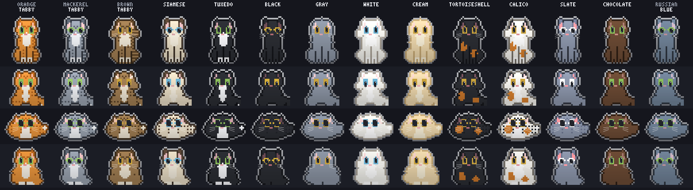

a cat or a dogthat lives onyour desktop.
It follows your cursor, kneads the keyboard when you type, purrs when you pet it, and stretches like mochi when you drag it. Switch species and you get a real dog: a wagging tail, a play bow, and a ball it brings back.

a real pet, not a screensaver
Pick cat or dog from the tray. Both run on a transparent, click-through overlay that floats over every app - but only the pet is interactive, so it never blocks your clicks.
mochi-drag
Grab and pull the pet and it stretches like taffy - head and feet stay solid, the body thins - then squashes and bounces back where you drop it.
eye-follow & pet
It watches your cursor and blinks. Rest the cursor on its head and it closes its eyes, purrs out loud (the dog wags instead), floats hearts, and nuzzles into your hand - the longer you pet, the happier it gets.
typing reaction
Type in any app and it taps its front paws. Go fast and it overheats - turns red, steams - then cools down.
mouse hunt
Flick the cursor fast and it crouches, stalks, and pounces at it, then settles wherever it lands. The dog drops into a play bow first.
meow & bark
A realistic formant “mee-ow” glide with vibrato, plus purr, chirp & a startled mrrp. The dog has its own voice: a plosive bark, panting, a soft whine, a chesty huff. No audio files.
moods & energy
An energy model drifts it through calm → playful → zoomies. Keep it busy and it goes wild, then settles back down.
breaks & reminders
It grows big to stretch with you and meows or barks on a schedule. Set a time + message and it reminds you, by name.
stays in its lane
Confine it to a play area - pick a tray preset or drag-to-draw one. It re-asserts top-most, even over fullscreen apps, and starts at login.
pomodoro timer
Set focus/break loops and a pixel timer floats next to your pet. It stretches with you at every break and calls you back to focus.
pinned note
Pin an important message and it stays in a bubble above your pet's head - in sight until you clear it.
butterfly & ball
Now and then a butterfly flutters in and the cat plays - it watches, swats, and pounces to catch it. Sometimes it lands on the cat's nose (achoo!), and once in a while a rare shiny one appears. Keep a dog and it starts its own game of fetch instead: it chases the ball down, carries it home, and drops it at your cursor.
scroll to react
Scroll and a leaf blows past in the direction you are going, faster the harder you flick the wheel: your pet rears up, tracks it, and takes a swipe as it passes. Coats with hand-painted climb art grab a yarn rope instead and haul themselves up it hand over hand.
field footage
Every clip below is rendered by the same sprite engine that draws the desktop pet - real behaviours, not mock-ups. These tapes are all cat; the dog runs on the same engine. Click a tape to pause it.
fourteen cats, fourteen dogs
Every cat is one role-coded sprite, recolored per pattern at draw time. Tap any coat below to try it on the live cat - or right-click the cat itself to cycle. Then design your own. The dog is its own sprite, not a recoloured cat, and its markings are built into the breed rather than painted on. The Black Lab ships in the app.
it reacts to your coding agent
pixelpets watches a tiny status file. Wire up a hook and your pet shows a thinking “…” bubble while your agent works, then does a happy hop when it finishes.
- Claude Code merge the bundled settings hooks
- Codex CLI drop into
~/.codex/config.toml - Cursor copy
.cursor/hooks.json - Antigravity add to
.agents/hooks.json - Kiro add via the Agent Hooks UI
it has good days and lazy days
Energy builds from what you do and decays when you stop - no mic, no telemetry. A sudden cursor jolt startles it: it puffs up, freezes, then bolts or creeps back.
Mellow - small, infrequent idle moves. Loafs or curls up nose-to-tail, watches the world.
Full reactions - the original feel. Hunts, pounces, purrs, wags.
Frantic and fast… then a hard crash back toward calm.
adopt a pet
free, open source,
and yours forever.
All art, code, and sound are original - the meow, the purr, and the bark are synthesized in code, no audio files. Built with Electron for Windows. Try it in your browser first, no install needed.
# clone & run the pet git clone https://github.com/JOhnsonKC201/pixelpets cd pixelpets npm install npm start # build a standalone app npm run pack // portable .exe npm run dist // windows installer